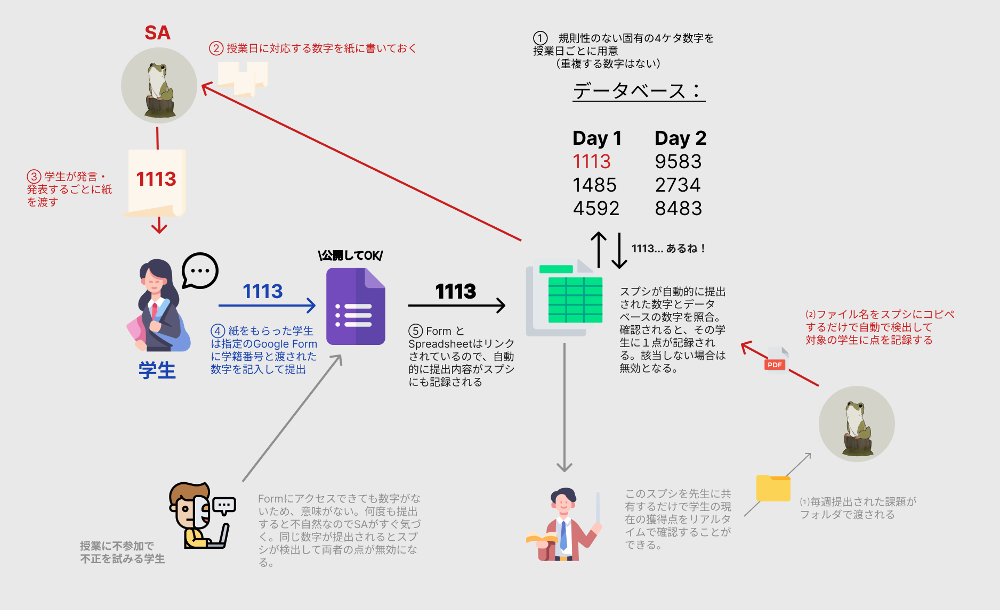
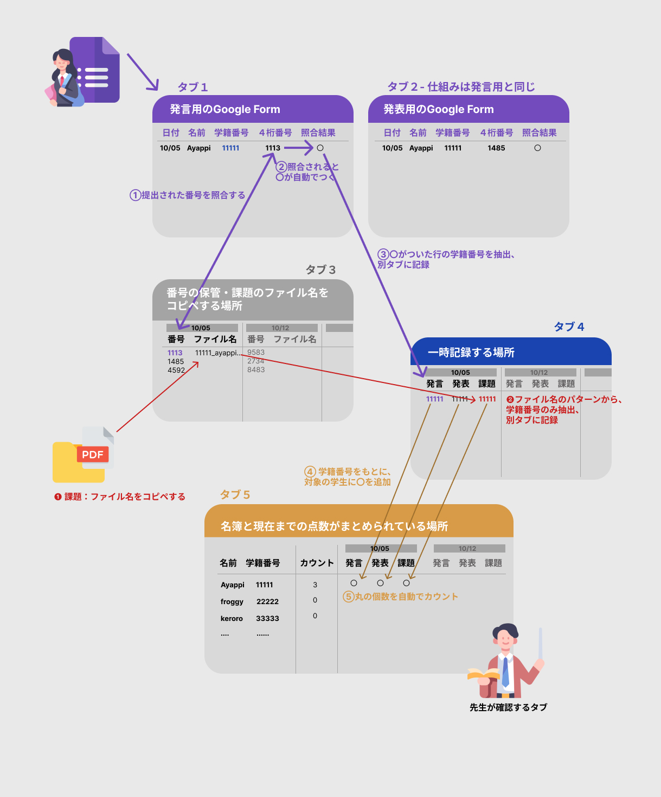

10/05 大学のSA業務をDX・自動化した話
こんにちは、あやっぴです。
私は大学で何度かSA（Student Assistant）を担当したことがあるのですが、そのアナログな業務をDX化したので紹介してみます。
SAとはStudent Assistantの略で、授業で教授のお手伝いをする人のことです。業務は主に受講生の出席確認、課題提出の記録、発言の加点などがあります。
通常、これらの作業はすべてアナログで行います。例えば出席確認の場合、受講生に専用の紙を配り、そこに各自が学籍番号や名前などを記入。そして授業後にSAが紙を回収し、自宅で地道にエクセルに記録していく……という流れです。
少人数のクラスならアナログでも問題ないかもしれませんが、20人以上になるとSAが辛い思いをします。そして、読解困難な文字もあって、これがまた大変でストレス(´；ω；`)
授業中は手ぶらな状態で、授業外の時間を作業に使うのはもったいないですよね。できればすべて授業時間内に終わらせたい……！ という思いから、DX・自動化を考え始めました。ただ、長年教鞭を取られてきた先生曰く、デジタルだと学生があらゆる手段で抜け穴を見つけてしまい、結局紙が最強だという結論に至ったそうです。くぅ……！
今回私が担当した授業の成績は、以下の基準で定められていました。
- 課題提出
- 授業参加（内容次第では先生からさらに追加点ももらえる）
- 発言
- 発表
アナログだと、学生が発言・発表するたびに紙を渡し、手書きの情報をもとに後でエクセルに記録する、という流れになります。課題については、学生が専用サイトから提出するため、最終的にSAのところにはPDF化されたファイルが渡されます。下の図は従来のやり方です。

次に今回私が新しく作った仕組みです。照合部分をDX・自動化して、全体的にアナログとデジタルのハイブリッド型にしてみました。

このシステムの中核はGoogle SpreadsheetとGoogle Formです。スプレッドシートは先生とSAの間で厳重に保管し、フォームは常に受講生に公開しています。
従来の手段で最も時間を取られていたのが、この照合プロセスです。そこを今回自動化しました。完全デジタルにしなかった理由は、抜け穴が生まれるリスクがあったためです。それでもSAとしての負担は大幅に減りました。
このアプローチで果たして抜け穴があるかどうか……。番号が書かれた紙が奪われるくらいしか思いつきませんでした。
今回の自動化はすべてスプレッドシート内で行っています。その仕組みを紹介します。スプレッドシートは凄いですよ……！ ちょっと扱いにくいところはありますが、コード次第で無限の可能性が広がります。
下の図は若干簡略化していますが、考え方は同じです。各四角形はスプレッドシートのタブを表しています。タブは全部で5つあり、そのうち2つはGoogle Formにより自動生成されます。
今回は発言用と発表用の2種類のフォームを用意しました。受講生には事前にフォームの使い分けを説明しておき、SA側ではフォームとスプレッドシートを連携させます。この連携はボタン1つで簡単に行えるので非常に便利です。こうすることで、フォームが提出されるたびに自動でスプレッドシートに情報が更新されていきます。

【メリット】
- 照合作業が自動化され、ヒューマンエラーがほぼゼロになる。
- SAの毎週の負担が大幅に減る。
【デメリット】
- 癖のあるシステムなので、テンプレがあってもITに慣れている人でないと扱いにくいかもしれない。
- 事前準備として、毎週の4桁番号をスプレッドシートに格納しておく必要がある。
いかがでしたか？
ちなみにこのシステムを先生に見せたところ、「Laziness is the mother of inventionだね」と言われて、フフフとなりました。
ではでは。